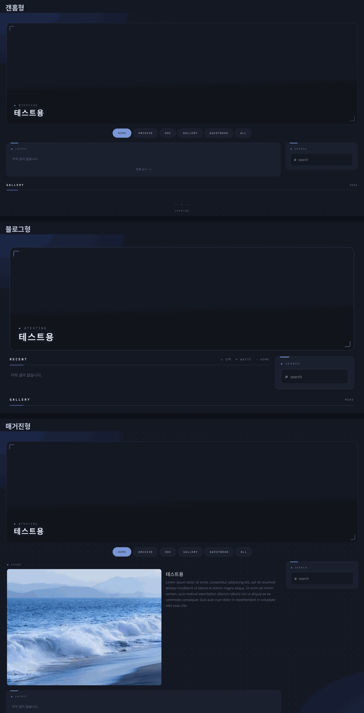
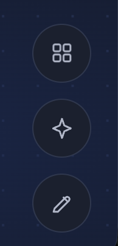

러브로그 · 시작하기
화면 구성과 버튼
홈은 세 가지 구조 중에서 고르고, 오른쪽 아래 버튼 세 개로 편집·꾸미기·글쓰기를 드나듭니다.
홈 구조 3종
- 갠홈형
- 헤더 아래 위젯이 카드로 배열되고 가운데에 고정글·최신글이 뜹니다. 대문 느낌.
- 블로그형
- 헤더 아래 바로 글 목록. 로그 위주라면 이쪽. 홈 그리드 대신 사이드바 위젯이 보여요.
- 매거진형
- 갠홈 그대로에 가운데 칸 📰 매거진 표지 위젯이 붙박이로 들어옵니다. 표지 글은 자동(최신·대표·고정) 또는 직접 고르기.
꾸미기 → 테마·레이아웃 → 구조에서 바꿉니다.

사진 자리img/ll-screen-structure.png오른쪽 아래 버튼
- ⠿ 위젯 편집
- 켜져 있는 동안만 위젯 드래그·↑↓ 이동·스티커 배치가 됩니다. 평소에는 내 홈도 방문자처럼 편하게 봐요.
- ✦ 꾸미기
- 설정 대시보드. 왼쪽 메뉴 순서대로 위젯 구성 → 카테고리 → 기본 정보 → 테마·레이아웃 → 배경·스티커 → 관리.
- ✎ 글쓰기
- 새 글. 게시판 안에서 누르면 그 카테고리가 자동 선택됩니다.

사진 자리img/ll-screen-fabs.png사이드바와 기둥
- 사이드바는 왼쪽 / 오른쪽 / 양쪽 중 고르고, 홈 화면의 기둥도 이 설정을 따릅니다.
- 홈에서 가운데 칸에 있던 위젯은 글 목록 화면으로 넘어가면 사이드로 붙습니다. 그때 어느 쪽에 둘지 위젯 ✎의 「카테고리 화면에선 왼쪽/오른쪽」으로 정해요.
- 위젯 ✎의 🫧 투명을 켜면 카드 배경·테두리 없이 내용만 얹히고, 편집 모드에선 점선으로 자리가 보입니다.